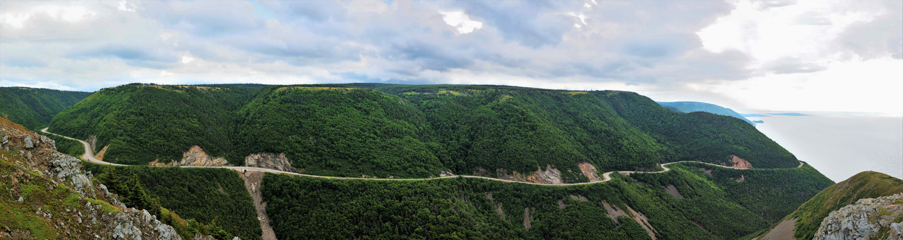
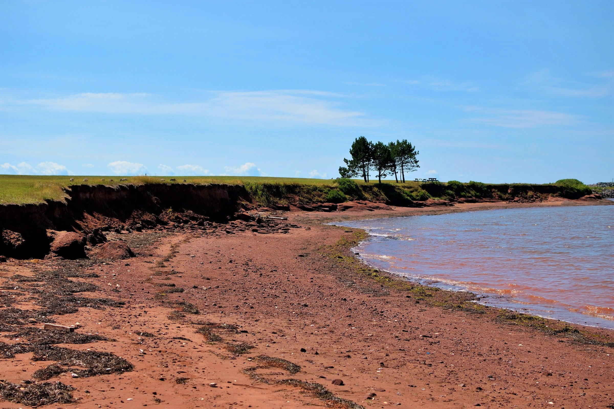
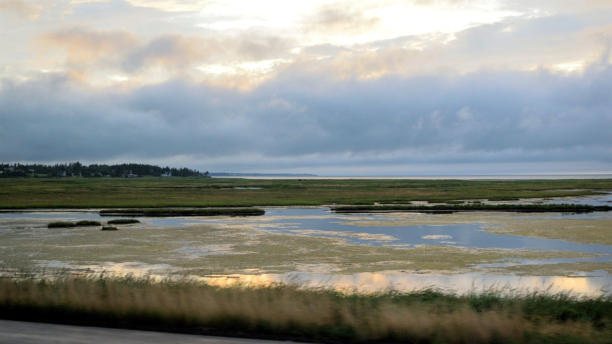

Main Page | Climate | Geographic History | Geological Landforms | Wildlife and Vegetation | Human Activity | Tourism | Bibliography
As mentioned in a previous page, the Atlantic Maritime Ecozone is mainly divided between the highlands found inland and the coastal lowlands. The coastal lowlands contain the majority of the AME's human population, with coastal cities flourishing such as: Halifax, NS, Saint John, NB, and Sydney, NS.
 Above: Panorama of the Cape Breton Highlands, taken from the Skyline trail in the Cape Breton Highlands National Park. Coordinates: 46°44'51.9"N 60°54'39.3"W
Geological landforms that can be found in the AME include:
 Above: Photo of a small beach near Charlottetown, PEI. Prince Edward Island is known for it's fertile red soils and sands, stained red due to iron oxide, a pigment that rust is mostly made of.
 Above: Photo of a salt marsh in New Brunswick, where freshwater mixes with large amounts of seawater from the Atlantic Ocean. Marshes and other wetlands are on the decline due to land reclamation, causing loss of habitat for some species of wildlife.
Return to the top of the page.
© Trevor Li 2018, all rights reserved. All images by Trevor Li unless noted. Background image by the Lubuntu Artwork Team